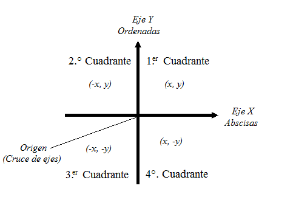
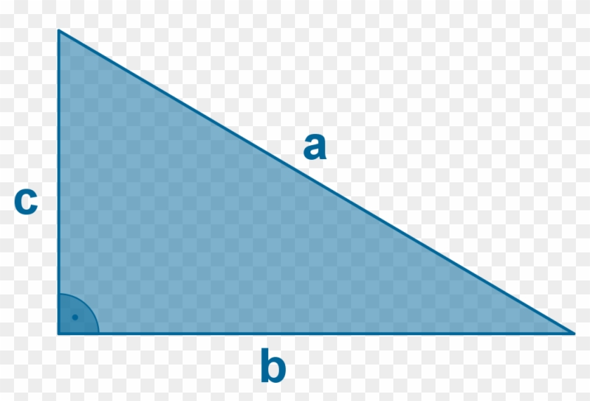
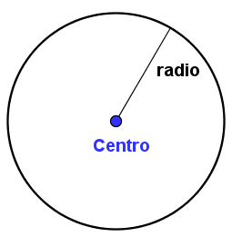
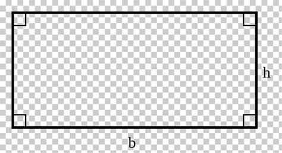

El espacio bidimensional es un módulo geométrico de la proyección plana y física del universo donde vivimos. Tiene dos dimensiones, es decir que cuenta con ancho y largo, pero no con profundidad
Definición de bidimensional El adjetivo bidimensional se utiliza para calificar a aquello que tiene dos dimensiones (2D). Un cuerpo que se proyecta a lo largo y a lo ancho,
En el plano cartesiano las rectas están conformadas por un lado horizontal y otro vertical, ambas se encuentran unidas a un punto de interacción en común llamado punto de origen o punto cero.
A su vez este punto de origen se encuentra dividido en cuadrantes y estos cuentan con una serie de coordenadas o pares de coordenadas representados por la (X) y la (Y). Estas letras son llamadas ejes y representan cada lado (ya sea positivo y negativo), la distancia y la ubicación en el plano.
Para localizar la (X) y la (Y) en el plano cartesiano se toma como referencia el punto origen y se va avanzando de este tanto como indique la abscisa, hacia la derecha si es positivo y a la izquierda si es negativo. De esta manera se comienza el proceso para obtener sus ubicaciones.

| Número | Figura | Formulas | |
|---|---|---|---|
| Perímetro | Área | ||
| Triángulo |  | P= a+b+c | A= (b*h)/2 |
| Círculo |  | P= π*diametro | A= π*r^2 |
| Cuadrado |  | P= 2*h+2*b | A= h*b |